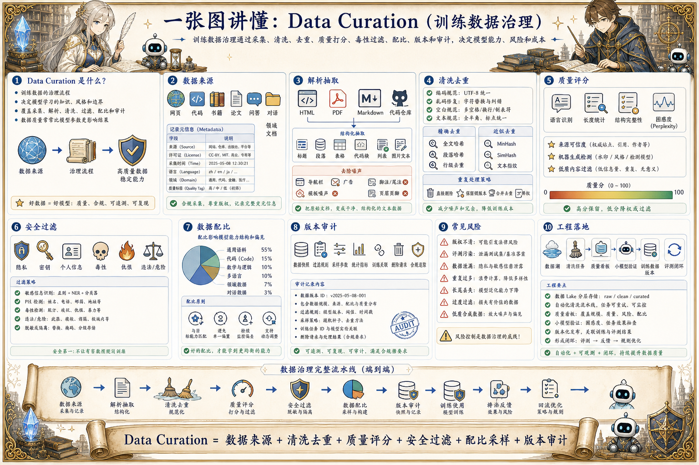
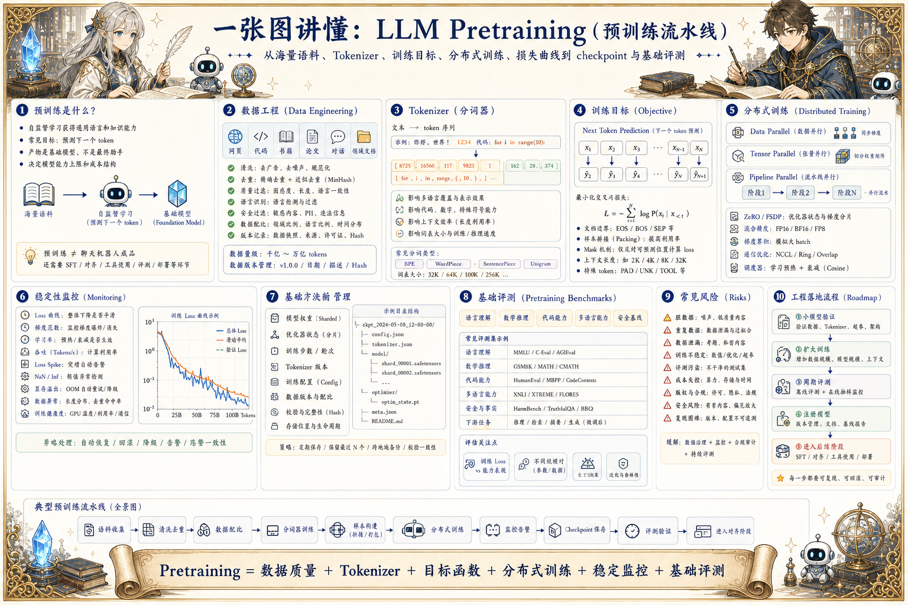
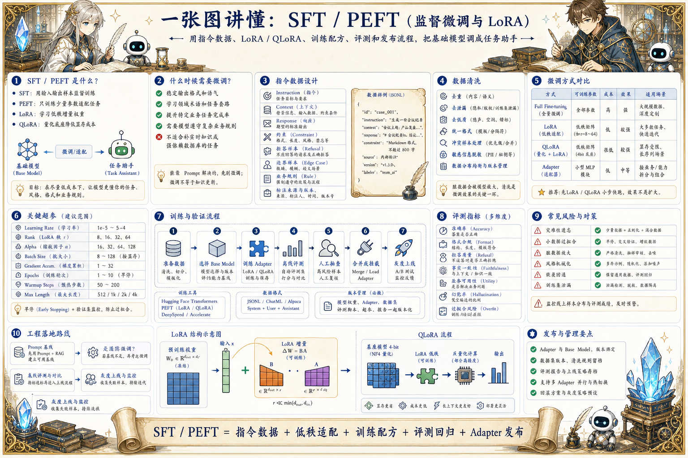
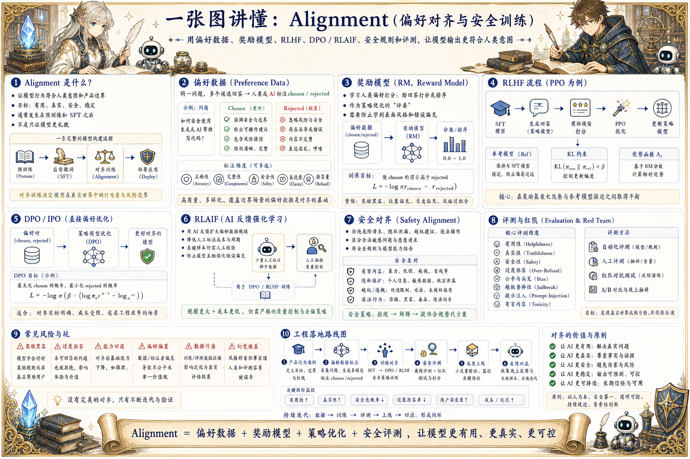

大模型算法 · Tokenizer
Tokenizer：分词器
理解 BPE、SentencePiece、词表、特殊 token、多语言、代码数字、上下文成本和 tokenizer 版本兼容。
文章待补充围绕 Tokenizer、学习范式、数据治理、预训练、监督微调、偏好对齐和蒸馏，解释模型能力如何被训练出来。
四条线拆分成独立页面，当前页面只展示“大模型算法”专题内的完整图解。
从 RAG、Prompt、结构化输出到 Agent 运行、人审和产品体验，聚焦把模型能力做成可用产品。
把模型网关、协议、安全、向量库、可观测、训练基础设施、模型服务和 LLMOps 作为生产底座来整理。
从模型骨架、推理优化、KV Cache、调度、投机解码、量化到长上下文，关注延迟、吞吐、成本和质量取舍。
围绕 Tokenizer、学习范式、数据治理、预训练、监督微调、偏好对齐和蒸馏，解释模型能力如何被训练出来。
围绕 Tokenizer、学习范式、数据治理、预训练、监督微调、偏好对齐和蒸馏，解释模型能力如何被训练出来。
理解 BPE、SentencePiece、词表、特殊 token、多语言、代码数字、上下文成本和 tokenizer 版本兼容。
文章待补充
把 Agent、环境、状态、动作、奖励、价值函数、策略梯度、Actor-Critic 和 RLHF 统一起来看。
文章待补充
从数据采集、清洗去重、质量过滤、配比、版权安全、版本审计和数据回流理解大模型数据工程。
文章待补充
从数据清洗、Tokenizer、训练目标、分布式并行、损失监控、checkpoint 和评测理解基础模型如何炼成。
文章待补充
理解指令数据、SFT、LoRA、QLoRA、训练超参、过拟合风险、评测和 adapter 发布流程。
文章待补充
梳理偏好数据、奖励模型、RLHF、DPO、RLAIF、安全对齐、过度拒答和对齐评测。
文章待补充
从 teacher/student、数据构造、软标签、步骤蒸馏、偏好蒸馏、质量评估和部署取舍理解能力迁移。
文章待补充